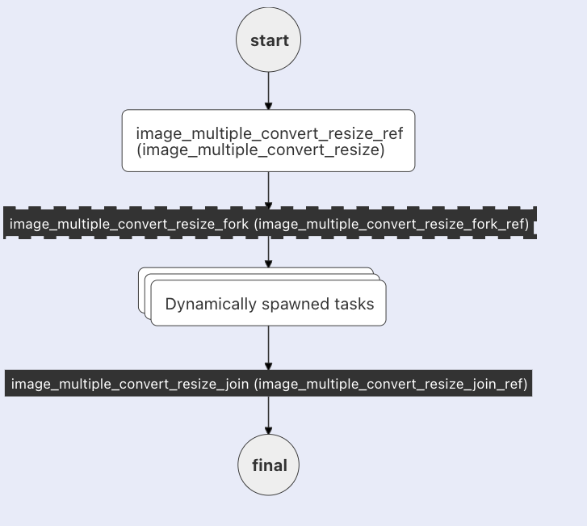

Dynamic Fork
The DYNAMIC_FORK operation in Conductor lets you execute a list of tasks or sub-workflows in parallel. This list will
be determined at run-time and be of variable length.
A DYNAMIC_FORK is typically followed by JOIN task that collects outputs from each of the forked tasks or sub workflows.
There are three things that are needed to configure a FORK_JOIN_DYNAMIC task.
- A list of tasks or sub-workflows that needs to be forked and run in parallel.
- A list of inputs to each of these forked tasks or sub-workflows
- A task prior to the
FORK_JOIN_DYNAMICtasks outputs 1 and 2 above that can be wired in as in input to theFORK_JOIN_DYNAMICtasks
Use Cases
A FORK_JOIN_DYNAMIC is useful, when a set of tasks or sub-workflows needs to be executed and the number of tasks or
sub-workflows are determined at run time. E.g. Let's say we have a task that resizes an image, and we need to create a
workflow that will resize an image into multiple sizes. In this case, a task can be created prior to
the FORK_JOIN_DYNAMIC task that will prepare the input that needs to be passed into the FORK_JOIN_DYNAMIC task. The
single image resize task does one job. The FORK_JOIN_DYNAMIC and the following JOIN will manage the multiple
invokes of the single image resize task. Here, the responsibilities are clearly broken out, where the single image resize
task does the core job and FORK_JOIN_DYNAMIC manages the orchestration and fault tolerance aspects.
Configuration
To use the DYNAMIC_FORK task, you need to provide the following attributes at the top level of the task configuration, as well as corresponding values inside inputParameters.
| Attribute | Description |
|---|---|
| dynamicForkTasksParam | Name of attribute in inputParameters to read array of task or subworkflow names from. |
| dynamicForkTasksInputParamName | Name of attribute in inputParameters to read map of inputs to use for spawned tasks or subworkflows. |
inputParameters
| Attribute | Description |
|---|---|
| *dynamicForkTasksParam | This is a JSON array of tasks or sub-workflow objects that needs to be forked and run in parallel (Note: This has a different format for SUB_WORKFLOW compared to SIMPLE tasks.) |
| *dynamicForkTasksInputParamName | A JSON map, where the keys are task or sub-workflow names, and the values are the inputParameters to be passed into the corresponding spawned tasks or sub-workflows. |
Note: * means the de-referenced name.
Examples
Example 1
Here is an example of a FORK_JOIN_DYNAMIC task followed by a JOIN task to run a SIMPLE task
(default value of forkTaskType is SIMPLE)
The SIMPLE task will resize the images and store the resized images into specified location as part of input below
| Attribute | Description |
|---|---|
| forkTaskName | Specify the name of the simple task to execute. |
| forkTaskType | Type of the fork Task. |
| forkTaskInputs | A JSON map, where the keys are task or sub-workflow names, and the values are the inputParameters to be passed into the corresponding spawned tasks or sub-workflows. |
{
"name": "image_multiple_convert_resize_fork",
"description": "Image multiple convert resize example",
"version": 1,
"tasks": [
{
"name": "image_multiple_convert_resize_dynamic_task",
"taskReferenceName": "image_multiple_convert_resize_dynamic_task_ref",
"inputParameters": {
"forkTaskName": "fork_task",
"forkTaskInputs": "Images" : [
{
"image" : "url1",
"location" : "location url",
"width" : 100,
"height" : 200
},
{
"image" : "url2",
"location" : "location url",
"width" : 300,
"height" : 400
}
],
"forkTaskType": "SIMPLE"
},
"type": "FORK_JOIN_DYNAMIC",
"decisionCases": {},
"dynamicForkTasksParam": "dynamicTasks",
"dynamicForkTasksInputParamName": "dynamicTasksInput",
"defaultCase": [],
"forkTasks": [],
"startDelay": 0,
"joinOn": [],
"optional": false,
"defaultExclusiveJoinTask": [],
"asyncComplete": false,
"loopOver": [],
"onStateChange": {}
},
{
"name": "image_multiple_convert_resize_join",
"taskReferenceName": "image_multiple_convert_resize_join_ref",
"inputParameters": {},
"type": "JOIN",
"decisionCases": {},
"defaultCase": [],
"forkTasks": [],
"startDelay": 0,
"joinOn": [],
"optional": false,
"defaultExclusiveJoinTask": [],
"asyncComplete": false,
"loopOver": [],
"onStateChange": {}
}
],
"inputParameters": [
"Images"
],
"outputParameters": {
"Output": "${join_task_ref.output}"
},
"failureWorkflow": "",
"schemaVersion": 2,
"restartable": true,
"workflowStatusListenerEnabled": false,
"ownerEmail": "example@gmail.com",
"timeoutPolicy": "ALERT_ONLY",
"timeoutSeconds": 0,
"variables": {},
"inputTemplate": {},
"onStateChange": {}
}
Example 2
Here is an example of a FORK_JOIN_DYNAMIC task followed by a JOIN task to run an HTTP task
Call to HTTP uri will resize the images and store the resized images into specified location as part of input below.
{
"name": "image_multiple_convert_resize_fork",
"description": "Image multiple convert resize example",
"tasks": [
{
"name": "image_multiple_convert_resize_dynamic_task_http",
"taskReferenceName": "image_multiple_convert_resize_dynamic_task_http_ref",
"inputParameters": {
"forkTaskName": "http_task_name",
"forkTaskType": "HTTP",
"forkTaskInputs": [
{
"uri" : "https://imageResizeUrl/imageName1/<width>/<height>/<location>"
},
{
"uri" : "https://imageResizeUrl/imageName2/<width>/<height>/<location>",
"method" : "GET"
}
]
},
"type": "FORK_JOIN_DYNAMIC",
"dynamicForkTasksParam": "dynamicTasks",
"dynamicForkTasksInputParamName": "dynamicTasksInput"
},
{
"name": "dynamic_workflow_array_http_join",
"taskReferenceName": "dynamic_workflow_array_http_join_ref",
"type": "JOIN"
}
]
}
Example 3
Here is an example of a FORK_JOIN_DYNAMIC task followed by a JOIN task to run SUBWORKFLOW
SUBWORKFLOW will resize the images and store the resized images into specified location as part of input below.
| Attribute | Description |
|---|---|
| forkTaskWorkflow | Specify the name of the sub-workflow to be executed. |
| forkTaskWorkflowVersion | Optional version of the workflow to run. |
| forkTaskInputs | Array of inputs - a task will be executed for each input. |
{
"name": "image_multiple_convert_resize_fork",
"description": "Image multiple convert resize example",
"tasks": [
{
"name": "image_multiple_convert_resize_dynamic_task_subworkflow",
"taskReferenceName": "image_multiple_convert_resize_dynamic_task_subworkflow_ref",
"inputParameters": {
"forkTaskWorkflow": "image_resize_subworkflow",
"forkTaskInputs": [
{
'image' : 'url1',
'location' : 'location url',
'width' : 100,
'height' : 200
},
{
'image' : 'url2',
'location' : 'locationurl',
'width' : 300,
'height' : 400
}
]
},
"type": "FORK_JOIN_DYNAMIC",
"dynamicForkTasksParam": "dynamicTasks",
"dynamicForkTasksInputParamName": "dynamicTasksInput"
},
{
"name": "dynamic_workflow_array_http_subworkflow",
"taskReferenceName": "dynamic_workflow_array_http_subworkflow_ref",
"type": "JOIN"
}
]
}
Example 4
Here is an example of a FORK_JOIN_DYNAMIC task followed by a JOIN using input parameters
Using JSON Task
{
"name": "image_multiple_convert_resize_fork",
"description": "Image multiple convert resize example",
"inputParameters": {
"dynamicTasks": [
{
"name":"image_convert_resize",
"taskReferenceName": "image_convert_resize_png_300x300_0"
// ...
},
{
"name":"image_convert_resize",
"taskReferenceName": "image_convert_resize_png_200x200_1"
// ...
}
],
"dynamicTasksInput": {
"image_convert_resize_png_300x300_0" : {
"outputWidth": 300,
"outputHeight": 300
},
"image_convert_resize_png_200x200_1" : {
"outputWidth": 200,
"outputHeight": 200
}
}
},
"type": "FORK_JOIN_DYNAMIC",
"dynamicForkTasksParam": "dynamicTasks",
"dynamicForkTasksInputParamName": "dynamicTasksInput"
}
Using JSON Subworkflow
{
"name": "dynamic",
"taskReferenceName": "dynamic_ref",
"inputParameters": {
"dynamicTasks": [
{
"subWorkflowParam" : {
"name": :"image_convert_resize_subworkflow",
"version": "1"
},
"type" : "SUB_WORKFLOW",
"taskReferenceName": "image_convert_resize_subworkflow_png_300x300_0",
// ...
},
{
"subWorkflowParam" : {
"name": :"image_convert_resize_subworkflow",
"version": "1"
},
"type" : "SUB_WORKFLOW",
"taskReferenceName": "image_convert_resize_subworkflow_png_200x200_1",
// ...
}
],
"dynamicTasksInput": {
"image_convert_resize_png_300x300_0" : {
"outputWidth": 300,
"outputHeight": 300
},
"image_convert_resize_png_200x200_1" : {
"outputWidth": 200,
"outputHeight": 200
}
}
},
"type": "FORK_JOIN_DYNAMIC",
"dynamicForkTasksParam": "dynamicTasks",
"dynamicForkTasksInputParamName": "dynamicTasksInput"
}
This appears in the UI as follows:

Let's assume this data is sent to the workflow:
{
"fileLocation": "https://pbs.twimg.com/media/FJY7ud0XEAYVCS8?format=png&name=900x900",
"outputFormats": ["png","jpg"],
"outputSizes": [
{"width":300,
"height":300},
{"width":200,
"height":200}
],
"maintainAspectRatio": "true"
}
With 2 file formats and 2 sizes in the input, we'll be creating 4 images total. The first task will generate the tasks and the parameters for these tasks:
dynamicForkTasksInputParamNameThis is a JSON map of task or sub-workflow objects and all the input parameters that these tasks will need to run.
Join Task
The JOIN task will run after all of the dynamic tasks, collecting the output for all of the tasks.